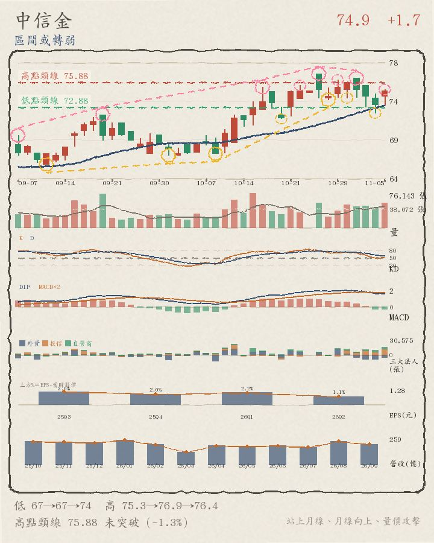
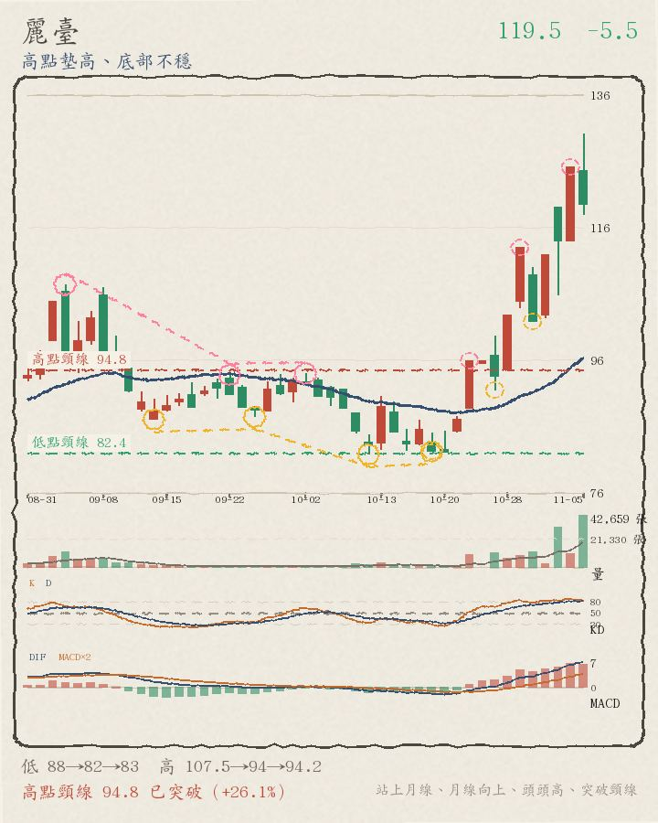

← 回股市觀察
逐檔技術線型分析
→ 看當日逐檔技術線型分析（全檔） 歷次逐檔分析
2026/11/03 · 成交金額上市前 50 名 ＋ 上櫃前 20 名（共 70 檔）· 公開資料整理
43307.54
加權指數 -1,612.60 點（-3.59%）
58 / 1000
上市個股上漲／下跌家數
上漲 5.4% · 下跌 92.6% · 持平 2.0%（共 1080 檔）
59 / 782
上櫃個股上漲／下跌家數
上漲 6.8% · 下跌 89.6% · 持平 3.7%（共 873 檔）
統計範圍：當日成交金額上市前 50 名 ＋ 上櫃前 20 名（共 70 檔，皆為 4 位數代號的個股，不含 ETF／權證）。
兩個市場各自取前 N 名後合併呈現，卡片上標示市場別（上市／上櫃），清單也附市場分布。
條件統計：上市 上升趨勢：底底高 ＋ 頭頭高 3 檔、突破頸線 2 檔、底底高 11 檔、頭頭高 9 檔、站上月線 4 檔、月線向上 11 檔、外資買超 15 檔、量價攻擊（收紅＋大量） 2 檔、跌破前低（線型轉弱） 39 檔；上櫃 上升趨勢：底底高 ＋ 頭頭高 0 檔、突破頸線 0 檔、底底高 2 檔、頭頭高 1 檔、站上月線 0 檔、月線向上 4 檔、外資買超 7 檔、量價攻擊（收紅＋大量） 0 檔、跌破前低（線型轉弱） 16 檔。
五項全滿足（底底高＋頭頭高＋站上月線＋月線向上＋5 日線向上）：上市 無；上櫃 無。
資料日 2026/11/03。籌碼：上市為證交所三大法人、上櫃為櫃買中心三大法人；上櫃另附融資餘額。
每一檔都附上 K 線圖與線型說明：黃圈是轉折低點、粉圈是轉折高點、藍線是月線。
圖上兩條水平虛線、左側標數值：高點頸線（紅，連到最多「轉折高點」的那條水平線，代表上方壓力帶；收盤站上就算突破）與
低點頸線（綠，連到最多「轉折低點」的那條水平線，代表下方支撐帶；收盤跌破就算跌破）；
兩條線都只看最近 6 個轉折點、容忍同一價位帶 4%，連不到 2 個轉折點就不畫。
卡片的標籤可以點回上方對應清單，清單裡的股名也可以點到該檔。
本頁為公開資料（證交所每日收盤行情與三大法人、櫃買中心每日收盤行情與三大法人、Yahoo 股市日線）的整理與觀察，
不構成投資建議，不報牌、不預測、不下買賣決策。
大盤趨勢快篩（加權指數） 資料日 2026/11/03・來源：證交所公開資料
主狀態：跌破頸線（M 頭成立）
前一交易日對照（11/02）：跌破月線（量比 20 0.83） → 今日跌破頸線（M 頭成立）（量比 20 1.03）
指標、數值、判定（點開看 12 項明細：均線位置／排列、月線方向、頸線、轉折結構、位階、量價…）
加權指數今天跌 1,612.60 點（-3.59%），收 43,307.54、跌破月線 47,323.21；月線還在下彎，MA5 這條短均還沒收復，離高點頸線 47,372.65 還差 8.58%。
- 均線位置：4 條均線站上 0 條；沒站上的是 MA5 45,368.68（收盤比它低 4.54%）、MA10 45,898.39（收盤比它低 5.64%）、MA20 47,323.21（收盤比它低 8.49%）、MA60 46,565.37（收盤比它低 7.00%）
- 月線方向：月線 MA20 現在 47,323.21，比 5 個交易日前低 663.20 點 → 下彎
- 量能：集中市場成交 10,020.4 億，比 5 日均量大不少（1.16 倍）、跟 20 日均量差不多（1.03 倍）
- 關鍵價位：高點頸線 47,372.65，還差 8.58%；低點頸線 44,639.15已跌破
- 大小型股：加權 -3.59%、櫃買 -6.42%，兩邊同向

圖說：加權指數日 K（與個股圖相同標記）：黃圈＝轉折低點、粉圈＝轉折高點、虛線小圈＝還沒確認的轉折、藍線＝月線 MA20、水平虛線＝高點／低點頸線。最後一根是資料日當天。
本區塊為公開資料的技術面觀察，不構成投資建議，
不報牌、不預測、不下買賣決策。成交金額為集中市場總成交金額（含 ETF／權證），
與頁首摘要的「上市個股成交金額」口徑不同。標籤是統計，不是評分、也不是推薦。
上市 vs 上櫃（同期快篩）
加權 -3.59% vs 櫃買 -6.42%（同向） → 同向
（兩個市場分開寫，不合併成一個數字；櫃買為 TPEX 公開資料）
櫃買歷史：TPEX 逐日回補 130 根；來源：櫃買中心 www/zh-tw/indexInfo/sectinx（逐日，官方；OpenAPI tpex_index 只回當月）
（TPEX OpenAPI 只回當月，故逐日回補；歷史不足就不算該條均線並標「資料不足」，不用錯數字）
近 20 個交易日大盤狀態回溯（最新在上）（點開看逐日主狀態／量比／量價象限）
用同一支程式回算最近 20 個交易日（主狀態 S1~S8 與量比 20 皆為當日收盤當時的判定，
不是事後調整）；量比 20 未公布的日子寫「—」。
好條件最多的（前 10）
不好條件最多的（前 10）
本期市場狀態：空頭（等權指數在 60 日均線之下）（空頭期間：趨勢類條件反向（回測後 20 日差距 −0.9% ~ −2.1%），本排行改用超跌反轉類（跌破前低／在月線之下／月線下彎））
好條件（4 項）：跌破前低、在月線之下、月線下彎、外資買超。
不好條件（5 項）：站上月線、月線向上、突破頸線、量價攻擊（收紅＋大量）、外資賣超。
兩邊都是同一組資料（日線結構＋當日收盤量價籌碼）算出來的「符合項目數」，只是方向相反；
條件數不是評分、也不是推薦，不構成投資建議。
上升趨勢：底底高 ＋ 頭頭高（3 上市 3／上櫃 0）
跌破前低（線型轉弱）（55 上市 39／上櫃 16）
逐檔分析（70 檔）
區間或轉弱 成交金額 1063.29 億・全榜第 1 名（上市第 1 名）
好條件 3/4：跌破前低、在月線之下、月線下彎
不好條件 1/5：外資賣超

今天帶量收黑、跌破月線 2446.25，跌破前一個轉折低點（高點頸線 2484.17 還在收盤上方），轉折還沒走出明顯方向。
- 月線位置：收盤 2295 在月線 2446.25 之下；5 日線 2367 也在月線之下（短均在下）；月線走平或向下、5 日線走平或向下
- 量能：成交量是 20 日均量的 1.79 倍，比 20 日均量大不少；收黑卻量增，量價背離
- 關鍵價位：高點頸線 2484.17 還沒突破、還在收盤上方 7.6%；最近轉折高點 2435（低於 5.7%）；最近轉折低點 2375（低於 3.4%）
- 轉折結構：低點 2350、2375、2375 與高點 2510、2590、2435 都沒有明顯遞增，屬於區間震盪或轉弱；還沒確認的轉折低點 10-27 2380、11-03 2280；還沒確認的轉折高點 10-21 2435、10-28 2430（圖上虛線小圈）
底部墊高、未過前高 成交金額 524.9 億・全榜第 2 名（上市第 2 名）
好條件 3/4：跌破前低、在月線之下、月線下彎
不好條件 1/5：外資賣超

今天帶量收黑、跌破月線 4298.25，跌破前一個轉折低點（高點頸線 4303.33 還在收盤上方），底部還在墊高（但高點沒同步創高）。
- 月線位置：收盤 3675 在月線 4298.25 之下；5 日線 3968 也在月線之下（短均在下）；月線走平或向下、5 日線走平或向下
- 量能：成交量是 20 日均量的 1.79 倍，比 20 日均量大不少；收黑卻量增，量價背離
- 關鍵價位：高點頸線 4303.33 還沒突破、還在收盤上方 14.6%；最近轉折高點 4245（低於 13.4%）；最近轉折低點 4875（低於 24.6%）
- 轉折結構：低點 3655、4430、4875 墊高 33.4%（底底高），但高點 5480、5165、4245 沒有同步創高；還沒確認的轉折低點 10-27 3910、11-03 3665；還沒確認的轉折高點 10-20 4305、11-02 4070（圖上虛線小圈）
底部墊高、未過前高 成交金額 277.29 億・全榜第 3 名（上市第 3 名）
好條件 3/4：跌破前低、在月線之下、月線下彎
不好條件 1/5：外資賣超

今天帶量收黑、跌破月線 1126.4，跌破前一個轉折低點（高點頸線 1135 還在收盤上方），底部還在墊高（但高點沒同步創高）。
- 月線位置：收盤 902 在月線 1126.4 之下；5 日線 1005.6 也在月線之下（短均在下）；月線走平或向下、5 日線走平或向下
- 量能：成交量是 20 日均量的 1.70 倍，比 20 日均量大不少；收黑卻量增，量價背離
- 關鍵價位：高點頸線 1135 還沒突破、還在收盤上方 20.5%；最近轉折高點 1180（低於 23.6%）；最近轉折低點 1040（低於 13.3%）
- 轉折結構：低點 873、932、1040 墊高 19.1%（底底高），但高點 1200、1420、1180 沒有同步創高；還沒確認的轉折低點 10-27 1035、11-03 898；還沒確認的轉折高點 10-28 1145、11-02 1020（圖上虛線小圈）
區間或轉弱 成交金額 254.57 億・全榜第 4 名（上市第 4 名）
好條件 2/4：跌破前低、在月線之下
不好條件 2/5：月線向上、外資賣超

今天收黑、成交量也比平均少、跌破月線 305.7，跌破前一個轉折低點（高點頸線 323.38 還在收盤上方），轉折還沒走出明顯方向。
- 月線位置：收盤 271 在月線 305.7 之下；5 日線 299.8 也在月線之下（短均在下）；月線向上、5 日線走平或向下
- 量能：成交量是 20 日均量的 0.92 倍，比 20 日均量少一些
- 關鍵價位：高點頸線 323.38 還沒突破、還在收盤上方 16.2%；最近轉折高點 325（低於 16.6%）；最近轉折低點 295（低於 8.1%）
- 轉折結構：低點 223、223、295 與高點 350.5、325.5、325 都沒有明顯遞增，屬於區間震盪或轉弱；還沒確認的轉折低點 10-27 290.5、11-03 271；還沒確認的轉折高點 10-27 321、11-02 308（圖上虛線小圈）
區間或轉弱 成交金額 251.6 億・全榜第 5 名（上市第 5 名）
好條件 3/4：跌破前低、在月線之下、月線下彎
不好條件 1/5：外資賣超

今天收黑、跌破月線 560.625，跌破前一個轉折低點（高點頸線 554.5 還在收盤上方），轉折還沒走出明顯方向。
- 月線位置：收盤 453 在月線 560.625 之下；5 日線 508.7 也在月線之下（短均在下）；月線走平或向下、5 日線走平或向下
- 量能：成交量是 20 日均量的 0.99 倍，跟 20 日均量差不多
- 關鍵價位：高點頸線 554.5 還沒突破、還在收盤上方 18.3%；最近轉折高點 686（低於 34.0%）；最近轉折低點 506（低於 10.5%）
- 轉折結構：低點 548、548、506 與高點 605、601、686 都沒有明顯遞增，屬於區間震盪或轉弱；還沒確認的轉折低點 10-27 507、11-03 452；還沒確認的轉折高點 10-21 559、10-28 550（圖上虛線小圈）
區間或轉弱 成交金額 217.04 億・全榜第 6 名（上市第 6 名）
好條件 3/4：跌破前低、在月線之下、月線下彎
不好條件 1/5：外資賣超

今天帶量收黑、跌破月線 466.15，跌破前一個轉折低點（高點頸線 452.5 還在收盤上方），轉折還沒走出明顯方向。
- 月線位置：收盤 411 在月線 466.15 之下；5 日線 455.2 也在月線之下（短均在下）；月線走平或向下、5 日線向上
- 量能：成交量是 20 日均量的 1.13 倍，比 20 日均量大一些；收黑卻量增，量價背離
- 關鍵價位：高點頸線 452.5 還沒突破、還在收盤上方 9.2%；最近轉折高點 497.5（低於 17.4%）；最近轉折低點 412（低於 0.2%）
- 轉折結構：低點 465.5、488、412 與高點 533、537、497.5 都沒有明顯遞增，屬於區間震盪或轉弱；還沒確認的轉折低點 10-19 415.5、11-03 411；還沒確認的轉折高點 10-16 461、10-21 444（圖上虛線小圈）
區間或轉弱 成交金額 205.18 億・全榜第 7 名（上市第 7 名）
好條件 1/4：外資買超
不好條件 3/5：站上月線、月線向上、量價攻擊（收紅＋大量）

今天帶量收紅、站上月線 64.595，離高點頸線 69.67 還差 2.8%，轉折還沒走出明顯方向。
- 月線位置：收盤 67.7 在月線 64.595 之上；5 日線 64.26 也在月線之下（短均在下）；月線向上、5 日線走平或向下
- 量能：成交量是 20 日均量的 2.61 倍，比 20 日均量大不少；收紅又量增，量價配合
- 關鍵價位：高點頸線 69.67 還沒突破，差 2.8%；最近轉折高點 73.6（低於 8.0%）；最近轉折低點 56.6（高於 19.6%）
- 轉折結構：低點 57.5、56、56.6 與高點 61.7、61.7、73.6 都沒有明顯遞增，屬於區間震盪或轉弱；還沒確認的轉折低點 10-21 65.6、10-30 58.8；還沒確認的轉折高點 10-28 68.4、11-03 70（圖上虛線小圈）
高點墊高、底部不穩 成交金額 197.86 億・全榜第 8 名（上市第 8 名）
好條件 3/4：跌破前低、在月線之下、月線下彎
不好條件 1/5：外資賣超

今天帶量收黑、跌破月線 1661.25，跌破前一個轉折低點（高點頸線 1877.5 還在收盤上方），高點還在墊高（但底部沒同步墊高）。
- 月線位置：收盤 1270 在月線 1661.25 之下；5 日線 1398 也在月線之下（短均在下）；月線走平或向下、5 日線走平或向下
- 量能：成交量是 20 日均量的 1.31 倍，比 20 日均量大不少；收黑卻量增，量價背離
- 關鍵價位：高點頸線 1877.5 還沒突破、還在收盤上方 32.4%；最近轉折高點 2115（低於 40.0%）；最近轉折低點 1810（低於 29.8%）
- 轉折結構：高點 1885、1965、2115 墊高 12.2%（頭頭高），但低點 1725、1560、1810 沒有同步墊高；還沒確認的轉折低點 10-27 1490、11-02 1255；還沒確認的轉折高點 10-21 1660、10-28 1575（圖上虛線小圈）
區間或轉弱 成交金額 187.89 億・全榜第 10 名（上市第 9 名）
好條件 4/4：跌破前低、在月線之下、月線下彎、外資買超
不好條件 0/5：無

今天帶量收黑、跌破月線 7854.25，跌破前一個轉折低點（高點頸線 8510 還在收盤上方），轉折還沒走出明顯方向。
- 月線位置：收盤 6795 在月線 7854.25 之下；5 日線 7505 也在月線之下（短均在下）；月線走平或向下、5 日線走平或向下
- 量能：成交量是 20 日均量的 1.70 倍，比 20 日均量大不少；收黑卻量增，量價背離
- 關鍵價位：高點頸線 8510 還沒突破、還在收盤上方 20.2%；最近轉折高點 8255（低於 17.7%）；最近轉折低點 7200（低於 5.6%）
- 轉折結構：低點 7730、7065、7200 與高點 8750、8490、8255 都沒有明顯遞增，屬於區間震盪或轉弱；還沒確認的轉折低點 10-22 7530、11-03 6710（圖上虛線小圈）
底部墊高、未過前高 成交金額 182.08 億・全榜第 11 名（上市第 10 名）
好條件 4/4：跌破前低、在月線之下、月線下彎、外資買超
不好條件 0/5：無

今天帶量收黑、跌破月線 130.975，跌破前一個轉折低點（高點頸線 129.75 還在收盤上方），底部還在墊高（但高點沒同步創高）。
- 月線位置：收盤 103 在月線 130.975 之下；5 日線 113.6 也在月線之下（短均在下）；月線走平或向下、5 日線走平或向下
- 量能：成交量是 20 日均量的 1.14 倍，比 20 日均量大一些；收黑卻量增，量價背離
- 關鍵價位：高點頸線 129.75 還沒突破、還在收盤上方 20.6%；最近轉折高點 165（低於 37.6%）；最近轉折低點 151.5（低於 32.0%）
- 轉折結構：低點 123、135、151.5 墊高 23.2%（底底高），但高點 145.5、168.5、165 沒有同步創高；還沒確認的轉折低點 10-30 107、11-03 102；還沒確認的轉折高點 10-22 131、10-28 128.5（圖上虛線小圈）
區間或轉弱 成交金額 179.47 億・全榜第 12 名（上市第 11 名）
好條件 3/4：跌破前低、在月線之下、月線下彎
不好條件 1/5：外資賣超

今天帶量收黑、跌破月線 693.2，跌破前一個轉折低點（高點頸線 702.75 還在收盤上方），轉折還沒走出明顯方向。
- 月線位置：收盤 616 在月線 693.2 之下；5 日線 667.2 也在月線之下（短均在下）；月線走平或向下、5 日線向上
- 量能：成交量是 20 日均量的 1.67 倍，比 20 日均量大不少；收黑卻量增，量價背離
- 關鍵價位：高點頸線 702.75 還沒突破、還在收盤上方 12.3%；最近轉折高點 709（低於 13.1%）；最近轉折低點 639（低於 3.6%）
- 轉折結構：低點 678、715、639 與高點 765、699、709 都沒有明顯遞增，屬於區間震盪或轉弱；還沒確認的轉折低點 10-30 624、11-03 612；還沒確認的轉折高點 11-02 692（圖上虛線小圈）
底部墊高、未過前高 成交金額 165.19 億・全榜第 13 名（上市第 12 名）
好條件 3/4：跌破前低、在月線之下、月線下彎
不好條件 1/5：外資賣超

今天帶量收黑、跌破月線 546.25，跌破前一個轉折低點（高點頸線 560 還在收盤上方），底部還在墊高（但高點沒同步創高）。
- 月線位置：收盤 443 在月線 546.25 之下；5 日線 497.2 也在月線之下（短均在下）；月線走平或向下、5 日線走平或向下
- 量能：成交量是 20 日均量的 1.13 倍，比 20 日均量大一些；收黑卻量增，量價背離
- 關鍵價位：高點頸線 560 還沒突破、還在收盤上方 20.9%；最近轉折高點 614（低於 27.9%）；最近轉折低點 518（低於 14.5%）
- 轉折結構：低點 446.5、463.5、518 墊高 16.0%（底底高），但高點 505、613、614 沒有同步創高；還沒確認的轉折低點 10-27 519、11-03 440；還沒確認的轉折高點 10-29 555、11-02 499（圖上虛線小圈）
高點墊高、底部不穩 成交金額 157.02 億・全榜第 14 名（上市第 13 名）
好條件 2/4：跌破前低、在月線之下
不好條件 2/5：月線向上、外資賣超

今天帶量收黑、跌破月線 764.05，跌破前一個轉折低點（高點頸線 865.67 還在收盤上方），高點還在墊高（但底部沒同步墊高）。
- 月線位置：收盤 600 在月線 764.05 之下；5 日線 693.2 也在月線之下（短均在下）；月線向上、5 日線走平或向下
- 量能：成交量是 20 日均量的 1.55 倍，比 20 日均量大不少；收黑卻量增，量價背離
- 關鍵價位：高點頸線 865.67 還沒突破、還在收盤上方 30.7%；最近轉折高點 885（低於 32.2%）；最近轉折低點 721（低於 16.8%）
- 轉折結構：高點 555、858、885 墊高 59.5%（頭頭高），但低點 482、731、721 沒有同步墊高；還沒確認的轉折低點 10-27 737、11-03 597；還沒確認的轉折高點 10-27 854、10-29 815（圖上虛線小圈）
底部墊高、未過前高 成交金額 156.28 億・全榜第 15 名（上市第 14 名）
好條件 3/4：跌破前低、在月線之下、月線下彎
不好條件 1/5：外資賣超

今天帶量收黑、跌破月線 5245.25，跌破前一個轉折低點（高點頸線 5221.67 還在收盤上方），底部還在墊高（但高點沒同步創高）。
- 月線位置：收盤 4395 在月線 5245.25 之下；5 日線 4762 也在月線之下（短均在下）；月線走平或向下、5 日線走平或向下
- 量能：成交量是 20 日均量的 1.13 倍，比 20 日均量大一些；收黑卻量增，量價背離
- 關鍵價位：高點頸線 5221.67 還沒突破、還在收盤上方 15.8%；最近轉折高點 5295（低於 17.0%）；最近轉折低點 4930（低於 10.9%）
- 轉折結構：低點 4635、4855、4930 墊高 6.4%（底底高），但高點 6325、5485、5295 沒有同步創高；還沒確認的轉折低點 10-27 4685、11-03 4355；還沒確認的轉折高點 10-27 5200、11-02 4835（圖上虛線小圈）
底部墊高、未過前高 成交金額 155.22 億・全榜第 16 名（上市第 15 名）
好條件 3/4：跌破前低、在月線之下、月線下彎
不好條件 1/5：外資賣超

今天帶量收黑、跌破月線 998.7，跌破前一個轉折低點（高點頸線 1055 還在收盤上方），底部還在墊高（但高點沒同步創高）。
- 月線位置：收盤 819 在月線 998.7 之下；5 日線 931 也在月線之下（短均在下）；月線走平或向下、5 日線走平或向下
- 量能：成交量是 20 日均量的 1.20 倍，比 20 日均量大不少；收黑卻量增，量價背離
- 關鍵價位：高點頸線 1055 還沒突破、還在收盤上方 22.4%；最近轉折高點 1065（低於 23.1%）；最近轉折低點 941（低於 13.0%）
- 轉折結構：低點 766、784、941 墊高 22.8%（底底高），但高點 835、1150、1065 沒有同步創高；還沒確認的轉折低點 10-27 928、11-03 819；還沒確認的轉折高點 10-16 1045、10-27 1055（圖上虛線小圈）
區間或轉弱 成交金額 151.17 億・全榜第 17 名（上市第 16 名）
好條件 3/4：跌破前低、在月線之下、月線下彎
不好條件 1/5：外資賣超

今天帶量收黑、跌破月線 6316.5，跌破前一個轉折低點（高點頸線 6410 還在收盤上方），轉折還沒走出明顯方向。
- 月線位置：收盤 4945 在月線 6316.5 之下；5 日線 5603 也在月線之下（短均在下）；月線走平或向下、5 日線走平或向下
- 量能：成交量是 20 日均量的 1.08 倍，比 20 日均量大一些；收黑卻量增，量價背離
- 關鍵價位：高點頸線 6410 還沒突破、還在收盤上方 22.9%；最近轉折高點 6370（低於 22.4%）；最近轉折低點 5970（低於 17.2%）
- 轉折結構：低點 5740、6355、5970 與高點 6750、7460、6370 都沒有明顯遞增，屬於區間震盪或轉弱；還沒確認的轉折低點 10-27 5960、11-03 4945；還沒確認的轉折高點 10-16 6845、10-21 6450（圖上虛線小圈）
區間或轉弱 成交金額 136.64 億・全榜第 18 名（上市第 17 名）
好條件 3/4：跌破前低、在月線之下、月線下彎
不好條件 1/5：外資賣超

今天帶量收黑、跌破月線 164.325，跌破前一個轉折低點（高點頸線 181 還在收盤上方），轉折還沒走出明顯方向。
- 月線位置：收盤 146 在月線 164.325 之下；5 日線 163 也在月線之下（短均在下）；月線走平或向下、5 日線向上
- 量能：成交量是 20 日均量的 1.42 倍，比 20 日均量大不少；收黑卻量增，量價背離
- 關鍵價位：高點頸線 181 還沒突破、還在收盤上方 19.3%；最近轉折高點 178.5（低於 18.2%）；最近轉折低點 151（低於 3.3%）
- 轉折結構：低點 174、151、151 與高點 180.5、184、178.5 都沒有明顯遞增，屬於區間震盪或轉弱；還沒確認的轉折低點 10-22 154、11-03 146；還沒確認的轉折高點 10-16 165、10-21 161.5（圖上虛線小圈）
區間或轉弱 成交金額 119.29 億・全榜第 21 名（上市第 18 名）
好條件 3/4：在月線之下、月線下彎、外資買超
不好條件 0/5：無

今天帶量收黑、跌破月線 6608.25，離高點頸線 6565 還差 8.1%，轉折還沒走出明顯方向。
- 月線位置：收盤 6035 在月線 6608.25 之下；5 日線 6290 也在月線之下（短均在下）；月線走平或向下、5 日線向上
- 量能：成交量是 20 日均量的 1.45 倍，比 20 日均量大不少；收黑卻量增，量價背離
- 關鍵價位：高點頸線 6565 還沒突破，差 8.1%；最近轉折高點 6655（低於 9.3%）；最近轉折低點 5710（高於 5.7%）
- 轉折結構：低點 5210、6760、5710 與高點 7330、6985、6655 都沒有明顯遞增，屬於區間震盪或轉弱；還沒確認的轉折低點 10-30 5995、11-03 6000；還沒確認的轉折高點 11-03 6475（圖上虛線小圈）
區間或轉弱 成交金額 114.84 億・全榜第 22 名（上市第 19 名）
好條件 3/4：跌破前低、在月線之下、月線下彎
不好條件 1/5：外資賣超

今天帶量收黑、跌破月線 1169.75，跌破前一個轉折低點（高點頸線 1082.5 還在收盤上方），轉折還沒走出明顯方向。
- 月線位置：收盤 970 在月線 1169.75 之下；5 日線 1070 也在月線之下（短均在下）；月線走平或向下、5 日線走平或向下
- 量能：成交量是 20 日均量的 1.08 倍，比 20 日均量大一些；收黑卻量增，量價背離
- 關鍵價位：高點頸線 1082.5 還沒突破、還在收盤上方 10.4%；最近轉折高點 1190（低於 18.5%）；最近轉折低點 1120（低於 13.4%）
- 轉折結構：低點 1030、950、1120 與高點 1310、1295、1190 都沒有明顯遞增，屬於區間震盪或轉弱；還沒確認的轉折低點 10-27 1055、11-03 960；還沒確認的轉折高點 10-21 1255、11-02 1080（圖上虛線小圈）
區間或轉弱 成交金額 108.75 億・全榜第 23 名（上市第 20 名）
好條件 3/4：在月線之下、月線下彎、外資買超
不好條件 0/5：無

今天帶量收黑、跌破月線 246.6，離高點頸線 257.25 還差 4.6%，轉折還沒走出明顯方向。
- 月線位置：收盤 245.5 在月線 246.6 之下；5 日線 248.3 也在月線之上（短均在上）；月線走平或向下、5 日線向上
- 量能：成交量是 20 日均量的 1.05 倍，比 20 日均量大一些；收黑卻量增，量價背離
- 關鍵價位：高點頸線 257.25 還沒突破，差 4.6%；最近轉折高點 253.5（低於 3.2%）；最近轉折低點 237（高於 3.6%）
- 轉折結構：低點 243.5、247、237 與高點 257、266.5、253.5 都沒有明顯遞增，屬於區間震盪或轉弱；還沒確認的轉折低點 10-27 244、10-30 240；還沒確認的轉折高點 10-22 250.5、11-02 252（圖上虛線小圈）
底部墊高、未過前高 成交金額 108.52 億・全榜第 24 名（上市第 21 名）
好條件 2/4：在月線之下、月線下彎
不好條件 1/5：外資賣超

今天帶量收黑、跌破月線 1338.5，離高點頸線 1400 還差 23.6%，底部還在墊高（但高點沒同步創高）。
- 月線位置：收盤 1070 在月線 1338.5 之下；5 日線 1199 也在月線之下（短均在下）；月線走平或向下、5 日線走平或向下
- 量能：成交量是 20 日均量的 1.12 倍，比 20 日均量大一些；收黑卻量增，量價背離
- 關鍵價位：高點頸線 1400 還沒突破，差 23.6%；最近轉折高點 1400（低於 23.6%）；最近轉折低點 1050（高於 1.9%）
- 轉折結構：低點 1010、1025、1050 墊高 4.0%（底底高），但高點 1125、1560、1400 沒有同步創高；還沒確認的轉折低點 10-28 1235、11-03 1070；還沒確認的轉折高點 10-27 1390、11-02 1220（圖上虛線小圈）
區間或轉弱 成交金額 88.84 億・全榜第 26 名（上市第 22 名）
好條件 3/4：跌破前低、在月線之下、月線下彎
不好條件 1/5：外資賣超

今天帶量收黑、跌破月線 3267.25，跌破前一個轉折低點（高點頸線 3378.33 還在收盤上方），轉折還沒走出明顯方向。
- 月線位置：收盤 2935 在月線 3267.25 之下；5 日線 3082 也在月線之下（短均在下）；月線走平或向下、5 日線走平或向下
- 量能：成交量是 20 日均量的 1.06 倍，比 20 日均量大一些；收黑卻量增，量價背離
- 關鍵價位：高點頸線 3378.33 還沒突破、還在收盤上方 13.1%；最近轉折高點 3450（低於 14.9%）；最近轉折低點 3050（低於 3.8%）
- 轉折結構：低點 3100、3285、3050 與高點 3600、3700、3450 都沒有明顯遞增，屬於區間震盪或轉弱；還沒確認的轉折低點 10-30 2885、11-03 2920；還沒確認的轉折高點 10-28 3330、11-03 3115（圖上虛線小圈）
區間或轉弱 成交金額 86.11 億・全榜第 28 名（上市第 23 名）
好條件 3/4：跌破前低、在月線之下、外資買超
不好條件 1/5：月線向上

今天帶量收黑、跌破月線 1104.8，跌破前一個轉折低點（高點頸線 1330 還在收盤上方），轉折還沒走出明顯方向。
- 月線位置：收盤 936 在月線 1104.8 之下；5 日線 1117.2 也在月線之上（短均在上）；月線向上、5 日線走平或向下
- 量能：成交量是 20 日均量的 1.19 倍，比 20 日均量大不少；收黑卻量增，量價背離
- 關鍵價位：高點頸線 1330 還沒突破、還在收盤上方 29.6%；最近轉折高點 1330（低於 29.6%）；最近轉折低點 1005（低於 6.9%）
- 轉折結構：低點 869、1010、1005 與高點 1220、1330、1330 都沒有明顯遞增，屬於區間震盪或轉弱；還沒確認的轉折低點 11-03 932；還沒確認的轉折高點 10-22 1210（圖上虛線小圈）
區間或轉弱 成交金額 85.62 億・全榜第 29 名（上市第 24 名）
好條件 3/4：跌破前低、在月線之下、外資買超
不好條件 1/5：月線向上

今天收黑、成交量也比平均少、跌破月線 388.4，跌破前一個轉折低點（高點頸線 428.33 還在收盤上方），轉折還沒走出明顯方向。
- 月線位置：收盤 320.5 在月線 388.4 之下；5 日線 375.7 也在月線之下（短均在下）；月線向上、5 日線走平或向下
- 量能：成交量是 20 日均量的 0.72 倍，比 20 日均量少很多
- 關鍵價位：高點頸線 428.33 還沒突破、還在收盤上方 25.2%；最近轉折高點 431.5（低於 25.7%）；最近轉折低點 355.5（低於 9.8%）
- 轉折結構：低點 298.5、376.5、355.5 與高點 431.5、422、431.5 都沒有明顯遞增，屬於區間震盪或轉弱；還沒確認的轉折低點 10-22 365、11-03 320.5（圖上虛線小圈）
區間或轉弱 成交金額 68.14 億・全榜第 32 名（上市第 25 名）
好條件 3/4：跌破前低、在月線之下、月線下彎
不好條件 1/5：外資賣超

今天收黑、跌破月線 68.45，跌破前一個轉折低點（高點頸線 74.33 還在收盤上方），轉折還沒走出明顯方向。
- 月線位置：收盤 60.2 在月線 68.45 之下；5 日線 66.58 也在月線之下（短均在下）；月線走平或向下、5 日線向上
- 量能：成交量是 20 日均量的 1.00 倍，跟 20 日均量差不多
- 關鍵價位：高點頸線 74.33 還沒突破、還在收盤上方 19.0%；最近轉折高點 73（低於 17.5%）；最近轉折低點 63（低於 4.4%）
- 轉折結構：低點 66.7、70.5、63 與高點 74.7、78.1、73 都沒有明顯遞增，屬於區間震盪或轉弱；還沒確認的轉折低點 10-23 66.4、11-03 60.1；還沒確認的轉折高點 10-16 69.4、10-22 69.9（圖上虛線小圈）
世芯-KY 3661 上市
3140 -255.0
區間或轉弱 成交金額 66.46 億・全榜第 34 名（上市第 26 名）
好條件 3/4：跌破前低、在月線之下、月線下彎
不好條件 1/5：外資賣超

今天收黑、成交量也比平均少、跌破月線 3771.75，跌破前一個轉折低點（高點頸線 3870 還在收盤上方），轉折還沒走出明顯方向。
- 月線位置：收盤 3140 在月線 3771.75 之下；5 日線 3488 也在月線之下（短均在下）；月線走平或向下、5 日線走平或向下
- 量能：成交量是 20 日均量的 0.91 倍，比 20 日均量少一些
- 關鍵價位：高點頸線 3870 還沒突破、還在收盤上方 18.9%；最近轉折高點 3825（低於 17.9%）；最近轉折低點 3260（低於 3.7%）
- 轉折結構：低點 2630、3585、3260 與高點 4490、3835、3825 都沒有明顯遞增，屬於區間震盪或轉弱；還沒確認的轉折低點 10-27 3455、11-03 3115（圖上虛線小圈）
區間或轉弱 成交金額 63.8 億・全榜第 35 名（上市第 27 名）
好條件 4/4：跌破前低、在月線之下、月線下彎、外資買超
不好條件 0/5：無

今天收黑、成交量也比平均少、跌破月線 1990.5，跌破前一個轉折低點（高點頸線 2005 還在收盤上方），轉折還沒走出明顯方向。
- 月線位置：收盤 1770 在月線 1990.5 之下；5 日線 1847 也在月線之下（短均在下）；月線走平或向下、5 日線走平或向下
- 量能：成交量是 20 日均量的 0.65 倍，比 20 日均量少很多
- 關鍵價位：高點頸線 2005 還沒突破、還在收盤上方 11.7%；最近轉折高點 1990（低於 11.1%）；最近轉折低點 1795（低於 1.4%）
- 轉折結構：低點 2075、2080、1795 與高點 2335、2020、1990 都沒有明顯遞增，屬於區間震盪或轉弱；還沒確認的轉折低點 11-02 1765、11-03 1765；還沒確認的轉折高點 11-03 1840（圖上虛線小圈）
底部墊高、未過前高 成交金額 61.46 億・全榜第 36 名（上市第 28 名）
好條件 3/4：跌破前低、在月線之下、月線下彎
不好條件 1/5：外資賣超

今天收黑、成交量也比平均少、跌破月線 35.078，跌破前一個轉折低點（高點頸線 37.08 還在收盤上方），底部還在墊高（但高點沒同步創高）。
- 月線位置：收盤 28.8 在月線 35.078 之下；5 日線 31.96 也在月線之下（短均在下）；月線走平或向下、5 日線走平或向下
- 量能：成交量是 20 日均量的 0.55 倍，比 20 日均量少很多
- 關鍵價位：高點頸線 37.08 還沒突破、還在收盤上方 22.3%；最近轉折高點 36.65（低於 21.4%）；最近轉折低點 34.45（低於 16.4%）
- 轉折結構：低點 27.75、33.75、34.45 墊高 24.1%（底底高），但高點 43.55、37.8、36.65 沒有同步創高；還沒確認的轉折低點 10-27 33.45、11-03 28.7；還沒確認的轉折高點 10-20 37.65、10-27 36.55（圖上虛線小圈）
區間或轉弱 成交金額 58.38 億・全榜第 37 名（上市第 29 名）
好條件 4/4：跌破前低、在月線之下、月線下彎、外資買超
不好條件 0/5：無

今天收黑、成交量也比平均少、跌破月線 772.2，跌破前一個轉折低點（高點頸線 780.5 還在收盤上方），轉折還沒走出明顯方向。
- 月線位置：收盤 574 在月線 772.2 之下；5 日線 687.2 也在月線之下（短均在下）；月線走平或向下、5 日線走平或向下
- 量能：成交量是 20 日均量的 0.86 倍，比 20 日均量少一些
- 關鍵價位：高點頸線 780.5 還沒突破、還在收盤上方 26.5%；最近轉折高點 859（低於 33.2%）；最近轉折低點 704（低於 18.5%）
- 轉折結構：低點 793、726、704 與高點 881、888、859 都沒有明顯遞增，屬於區間震盪或轉弱；還沒確認的轉折低點 10-22 750、11-03 574；還沒確認的轉折高點 10-27 783、10-29 778（圖上虛線小圈）
區間或轉弱 成交金額 58.25 億・全榜第 38 名（上市第 30 名）
好條件 4/4：跌破前低、在月線之下、月線下彎、外資買超
不好條件 0/5：無

今天收黑、成交量也比平均少、跌破月線 1887.75，跌破前一個轉折低點（高點頸線 2055 還在收盤上方），轉折還沒走出明顯方向。
- 月線位置：收盤 1495 在月線 1887.75 之下；5 日線 1659 也在月線之下（短均在下）；月線走平或向下、5 日線走平或向下
- 量能：成交量是 20 日均量的 0.87 倍，比 20 日均量少一些
- 關鍵價位：高點頸線 2055 還沒突破、還在收盤上方 27.3%；最近轉折高點 1875（低於 20.3%）；最近轉折低點 1910（低於 21.7%）
- 轉折結構：低點 1770、1970、1910 與高點 2145、2055、1875 都沒有明顯遞增，屬於區間震盪或轉弱；還沒確認的轉折低點 10-27 1740、11-03 1480；還沒確認的轉折高點 10-19 2055（圖上虛線小圈）
區間或轉弱 成交金額 56.25 億・全榜第 39 名（上市第 31 名）
好條件 3/4：跌破前低、在月線之下、月線下彎
不好條件 1/5：外資賣超

今天收黑、跌破月線 48.02，跌破前一個轉折低點（高點頸線 49.12 還在收盤上方），轉折還沒走出明顯方向。
- 月線位置：收盤 41.2 在月線 48.02 之下；5 日線 44.55 也在月線之下（短均在下）；月線走平或向下、5 日線走平或向下
- 量能：成交量是 20 日均量的 1.03 倍，跟 20 日均量差不多
- 關鍵價位：高點頸線 49.12 還沒突破、還在收盤上方 16.1%；最近轉折高點 49.7（低於 17.1%）；最近轉折低點 45.65（低於 9.7%）
- 轉折結構：低點 46.25、48.55、45.65 與高點 52.2、56.2、49.7 都沒有明顯遞增，屬於區間震盪或轉弱；還沒確認的轉折低點 10-27 46.25、11-03 41.2；還沒確認的轉折高點 10-29 48.7、11-02 45.35（圖上虛線小圈）
區間或轉弱 成交金額 55.36 億・全榜第 40 名（上市第 32 名）
好條件 4/4：跌破前低、在月線之下、月線下彎、外資買超
不好條件 0/5：無

今天帶量收黑、跌破月線 2058.5，跌破前一個轉折低點（高點頸線 2090 還在收盤上方），轉折還沒走出明顯方向。
- 月線位置：收盤 1545 在月線 2058.5 之下；5 日線 1799 也在月線之下（短均在下）；月線走平或向下、5 日線走平或向下
- 量能：成交量是 20 日均量的 1.15 倍，比 20 日均量大不少；收黑卻量增，量價背離
- 關鍵價位：高點頸線 2090 還沒突破、還在收盤上方 26.1%；最近轉折高點 2070（低於 25.4%）；最近轉折低點 1945（低於 20.6%）
- 轉折結構：低點 2070、2025、1945 與高點 2560、2110、2070 都沒有明顯遞增，屬於區間震盪或轉弱；還沒確認的轉折低點 10-27 1905、11-03 1545（圖上虛線小圈）
騰輝電子-KY 6672 上市
502 -27.0
上升趨勢（底底高＋頭頭高） 成交金額 53.95 億・全榜第 41 名（上市第 33 名）
好條件 2/4：跌破前低、在月線之下
不好條件 2/5：月線向上、外資賣超

今天帶量收黑、跌破月線 549.975，跌破前一個轉折低點（高點頸線 609.75 還在收盤上方），轉折結構仍是底底高＋頭頭高。
- 月線位置：收盤 502 在月線 549.975 之下；5 日線 537 也在月線之下（短均在下）；月線向上、5 日線走平或向下
- 量能：成交量是 20 日均量的 1.73 倍，比 20 日均量大不少；收黑卻量增，量價背離
- 關鍵價位：高點頸線 609.75 還沒突破、還在收盤上方 17.7%；最近轉折高點 677（低於 25.8%）；最近轉折低點 532（低於 5.6%）
- 轉折結構：低點 261.5、285、532 一路墊高 103.4%、高點 317.5、605、677 也一路墊高 113.2%，是底底高＋頭頭高；還沒確認的轉折低點 10-28 516、11-03 493.5；還沒確認的轉折高點 10-29 617、11-03 544（圖上虛線小圈）
區間或轉弱 成交金額 52.49 億・全榜第 42 名（上市第 34 名）
好條件 3/4：跌破前低、在月線之下、月線下彎
不好條件 1/5：外資賣超

今天收黑、成交量也比平均少、跌破月線 10347，跌破前一個轉折低點（高點頸線 10348.3 還在收盤上方），轉折還沒走出明顯方向。
- 月線位置：收盤 9240 在月線 10347 之下；5 日線 9668 也在月線之下（短均在下）；月線走平或向下、5 日線走平或向下
- 量能：成交量是 20 日均量的 0.95 倍，跟 20 日均量差不多
- 關鍵價位：高點頸線 10348.3 還沒突破、還在收盤上方 10.7%；最近轉折高點 10290（低於 10.2%）；最近轉折低點 9500（低於 2.7%）
- 轉折結構：低點 11665、11700、9500 與高點 13500、10580、10290 都沒有明顯遞增，屬於區間震盪或轉弱；還沒確認的轉折低點 10-27 9475、11-03 9125；還沒確認的轉折高點 10-16 10175、11-03 9850（圖上虛線小圈）
區間或轉弱 成交金額 51.29 億・全榜第 43 名（上市第 35 名）
好條件 4/4：跌破前低、在月線之下、月線下彎、外資買超
不好條件 0/5：無

今天帶量收黑、跌破月線 5448.25，跌破前一個轉折低點（高點頸線 5543.33 還在收盤上方），轉折還沒走出明顯方向。
- 月線位置：收盤 4470 在月線 5448.25 之下；5 日線 5018 也在月線之下（短均在下）；月線走平或向下、5 日線走平或向下
- 量能：成交量是 20 日均量的 1.52 倍，比 20 日均量大不少；收黑卻量增，量價背離
- 關鍵價位：高點頸線 5543.33 還沒突破、還在收盤上方 19.4%；最近轉折高點 5610（低於 20.3%）；最近轉折低點 5035（低於 11.2%）
- 轉折結構：低點 5620、5380、5035 與高點 6615、6515、5610 都沒有明顯遞增，屬於區間震盪或轉弱；還沒確認的轉折低點 10-27 5070、11-03 4425；還沒確認的轉折高點 10-20 5540、10-22 5480（圖上虛線小圈）
區間或轉弱 成交金額 50.9 億・全榜第 44 名（上市第 36 名）
好條件 3/4：跌破前低、在月線之下、月線下彎
不好條件 1/5：外資賣超

今天帶量收黑、跌破月線 267.625，跌破前一個轉折低點（高點頸線 264.5 還在收盤上方），轉折還沒走出明顯方向。
- 月線位置：收盤 228 在月線 267.625 之下；5 日線 245.1 也在月線之下（短均在下）；月線走平或向下、5 日線走平或向下
- 量能：成交量是 20 日均量的 1.38 倍，比 20 日均量大不少；收黑卻量增，量價背離
- 關鍵價位：高點頸線 264.5 還沒突破、還在收盤上方 13.8%；最近轉折高點 304.5（低於 25.1%）；最近轉折低點 254（低於 10.2%）
- 轉折結構：低點 278、278、254 與高點 328、299.5、304.5 都沒有明顯遞增，屬於區間震盪或轉弱；還沒確認的轉折低點 10-30 228、11-03 227；還沒確認的轉折高點 10-29 261.5、11-02 247（圖上虛線小圈）
區間或轉弱 成交金額 50.47 億・全榜第 45 名（上市第 37 名）
好條件 3/4：跌破前低、在月線之下、月線下彎
不好條件 1/5：外資賣超

今天帶量收黑、跌破月線 105.445，跌破前一個轉折低點（高點頸線 108.25 還在收盤上方），轉折還沒走出明顯方向。
- 月線位置：收盤 88.3 在月線 105.445 之下；5 日線 96.68 也在月線之下（短均在下）；月線走平或向下、5 日線走平或向下
- 量能：成交量是 20 日均量的 1.65 倍，比 20 日均量大不少；收黑卻量增，量價背離
- 關鍵價位：高點頸線 108.25 還沒突破、還在收盤上方 18.4%；最近轉折高點 107.5（低於 17.9%）；最近轉折低點 99.2（低於 11.0%）
- 轉折結構：低點 114、114.5、99.2 與高點 124.5、123、107.5 都沒有明顯遞增，屬於區間震盪或轉弱；還沒確認的轉折低點 10-30 93.2、11-03 87.7；還沒確認的轉折高點 10-16 109、10-21 104.5（圖上虛線小圈）
矽力*-KY 6415 上市
472.5 -28.5
上升趨勢（底底高＋頭頭高） 成交金額 48.38 億・全榜第 47 名（上市第 38 名）
好條件 2/4：在月線之下、外資買超
不好條件 1/5：月線向上

今天帶量收黑、跌破月線 474，離高點頸線 510.33 還差 7.4%，轉折結構仍是底底高＋頭頭高。
- 月線位置：收盤 472.5 在月線 474 之下；5 日線 504.9 也在月線之上（短均在上）；月線向上、5 日線向上
- 量能：成交量是 20 日均量的 1.62 倍，比 20 日均量大不少；收黑卻量增，量價背離
- 關鍵價位：高點頸線 510.33 還沒突破，差 7.4%；最近轉折高點 551（低於 14.2%）；最近轉折低點 456.5（高於 3.5%）
- 轉折結構：低點 406.5、412、456.5 一路墊高 12.3%、高點 475、513、551 也一路墊高 16.0%，是底底高＋頭頭高；還沒確認的轉折低點 10-30 486.5、11-03 472；還沒確認的轉折高點 10-22 508、11-03 510（圖上虛線小圈）
區間或轉弱 成交金額 48.07 億・全榜第 48 名（上市第 39 名）
好條件 3/4：跌破前低、在月線之下、月線下彎
不好條件 1/5：外資賣超

今天收黑、跌破月線 2002，跌破前一個轉折低點（高點頸線 2367.5 還在收盤上方），轉折還沒走出明顯方向。
- 月線位置：收盤 1575 在月線 2002 之下；5 日線 1668 也在月線之下（短均在下）；月線走平或向下、5 日線走平或向下
- 量能：成交量是 20 日均量的 1.01 倍，跟 20 日均量差不多
- 關鍵價位：高點頸線 2367.5 還沒突破、還在收盤上方 33.5%；最近轉折高點 2080（低於 24.3%）；最近轉折低點 1810（低於 13.0%）
- 轉折結構：低點 2095、1930、1810 與高點 2375、2685、2080 都沒有明顯遞增，屬於區間震盪或轉弱；還沒確認的轉折低點 11-02 1555、11-03 1555；還沒確認的轉折高點 10-27 1890、11-03 1675（圖上虛線小圈）
區間或轉弱 成交金額 47.77 億・全榜第 49 名（上市第 40 名）
好條件 3/4：跌破前低、在月線之下、月線下彎
不好條件 1/5：外資賣超

今天收黑、成交量也比平均少、跌破月線 1575.5，跌破前一個轉折低點（高點頸線 1625 還在收盤上方），轉折還沒走出明顯方向。
- 月線位置：收盤 1360 在月線 1575.5 之下；5 日線 1487 也在月線之下（短均在下）；月線走平或向下、5 日線走平或向下
- 量能：成交量是 20 日均量的 0.93 倍，比 20 日均量少一些
- 關鍵價位：高點頸線 1625 還沒突破、還在收盤上方 16.3%；最近轉折高點 1770（低於 23.2%）；最近轉折低點 1455（低於 6.5%）
- 轉折結構：低點 1200、1470、1455 與高點 1665、1800、1770 都沒有明顯遞增，屬於區間震盪或轉弱；還沒確認的轉折低點 10-27 1405、11-03 1360；還沒確認的轉折高點 10-29 1595、11-02 1535（圖上虛線小圈）
區間或轉弱 成交金額 42.86 億・全榜第 50 名（上市第 41 名）
好條件 4/4：跌破前低、在月線之下、月線下彎、外資買超
不好條件 0/5：無

今天帶量收黑、跌破月線 2322.5，跌破前一個轉折低點（高點頸線 2487.5 還在收盤上方），轉折還沒走出明顯方向。
- 月線位置：收盤 2160 在月線 2322.5 之下；5 日線 2356 也在月線之上（短均在上）；月線走平或向下、5 日線向上
- 量能：成交量是 20 日均量的 1.31 倍，比 20 日均量大不少；收黑卻量增，量價背離
- 關鍵價位：高點頸線 2487.5 還沒突破、還在收盤上方 13.2%；最近轉折高點 2490（低於 13.3%）；最近轉折低點 2200（低於 1.8%）
- 轉折結構：低點 2300、2065、2200 與高點 2510、2515、2490 都沒有明顯遞增，屬於區間震盪或轉弱；還沒確認的轉折低點 10-30 2225、11-03 2115（圖上虛線小圈）
區間或轉弱 成交金額 42.29 億・全榜第 51 名（上市第 42 名）
好條件 3/4：跌破前低、在月線之下、月線下彎
不好條件 1/5：外資賣超

今天帶量收黑、跌破月線 977.6，跌破前一個轉折低點（高點頸線 1051.25 還在收盤上方），轉折還沒走出明顯方向。
- 月線位置：收盤 821 在月線 977.6 之下；5 日線 930.2 也在月線之下（短均在下）；月線走平或向下、5 日線走平或向下
- 量能：成交量是 20 日均量的 1.45 倍，比 20 日均量大不少；收黑卻量增，量價背離
- 關鍵價位：高點頸線 1051.25 還沒突破、還在收盤上方 21.9%；最近轉折高點 1030（低於 20.3%）；最近轉折低點 884（低於 7.1%）
- 轉折結構：低點 781、951、884 與高點 1090、1030、1030 都沒有明顯遞增，屬於區間震盪或轉弱；還沒確認的轉折低點 10-22 911、11-03 821；還沒確認的轉折高點 10-21 1015、10-22 1015（圖上虛線小圈）
上升趨勢（底底高＋頭頭高） 成交金額 41.94 億・全榜第 52 名（上市第 43 名）
好條件 3/4：跌破前低、在月線之下、月線下彎
不好條件 1/5：外資賣超

今天收黑、成交量也比平均少、跌破月線 232.2，跌破前一個轉折低點（高點頸線 232 還在收盤上方），轉折結構仍是底底高＋頭頭高。
- 月線位置：收盤 186 在月線 232.2 之下；5 日線 206.1 也在月線之下（短均在下）；月線走平或向下、5 日線走平或向下
- 量能：成交量是 20 日均量的 0.62 倍，比 20 日均量少很多
- 關鍵價位：高點頸線 232 還沒突破、還在收盤上方 19.8%；最近轉折高點 266（低於 30.1%）；最近轉折低點 228（低於 18.4%）
- 轉折結構：低點 213、219、228 一路墊高 7.0%、高點 235、261、266 也一路墊高 13.2%，是底底高＋頭頭高；還沒確認的轉折低點 10-27 215、11-03 186；還沒確認的轉折高點 10-27 229、11-02 209（圖上虛線小圈）
高點墊高、底部不穩 成交金額 40.66 億・全榜第 54 名（上市第 44 名）
好條件 2/4：在月線之下、月線下彎
不好條件 1/5：外資賣超

今天收黑、成交量也比平均少、跌破月線 186.675，離高點頸線 187.75 還差 6.0%，高點還在墊高（但底部沒同步墊高）。
- 月線位置：收盤 176.5 在月線 186.675 之下；5 日線 184.9 也在月線之下（短均在下）；月線走平或向下、5 日線走平或向下
- 量能：成交量是 20 日均量的 0.59 倍，比 20 日均量少很多
- 關鍵價位：高點頸線 187.75 還沒突破，差 6.0%；最近轉折高點 199.5（低於 11.5%）；最近轉折低點 173.5（高於 1.7%）
- 轉折結構：高點 190.5、194.5、199.5 墊高 4.7%（頭頭高），但低點 178、182.5、173.5 沒有同步墊高；還沒確認的轉折低點 10-30 179.5、11-03 176.5；還沒確認的轉折高點 10-28 196、11-02 185（圖上虛線小圈）
區間或轉弱 成交金額 39.33 億・全榜第 55 名（上市第 45 名）
好條件 3/4：在月線之下、月線下彎、外資買超
不好條件 0/5：無

今天帶量收黑、跌破月線 254.475，離高點頸線 292 還差 17.0%，轉折還沒走出明顯方向。
- 月線位置：收盤 242.5 在月線 254.475 之下；5 日線 267.7 也在月線之上（短均在上）；月線走平或向下、5 日線向上
- 量能：成交量是 20 日均量的 1.49 倍，比 20 日均量大不少；收黑卻量增，量價背離
- 關鍵價位：高點頸線 292 還沒突破，差 17.0%；最近轉折高點 291.5（低於 16.8%）；最近轉折低點 226.5（高於 7.1%）
- 轉折結構：低點 263、265.5、226.5 與高點 290、290、291.5 都沒有明顯遞增，屬於區間震盪或轉弱；還沒確認的轉折低點 10-22 233、11-03 240；還沒確認的轉折高點 10-16 251、10-21 246.5（圖上虛線小圈）
區間或轉弱 成交金額 38.25 億・全榜第 56 名（上市第 46 名）
好條件 1/4：在月線之下
不好條件 2/5：月線向上、外資賣超

今天帶量收黑、跌破月線 158.125，離高點頸線 161.5 還差 4.6%，轉折還沒走出明顯方向。
- 月線位置：收盤 154 在月線 158.125 之下；5 日線 159.6 也在月線之上（短均在上）；月線向上、5 日線向上
- 量能：成交量是 20 日均量的 1.45 倍，比 20 日均量大不少；收黑卻量增，量價背離
- 關鍵價位：高點頸線 161.5 還沒突破，差 4.6%；最近轉折高點 164（低於 6.1%）；最近轉折低點 153.5（高於 0.3%）
- 轉折結構：低點 148、147.5、153.5 與高點 164.5、164、164 都沒有明顯遞增，屬於區間震盪或轉弱；還沒確認的轉折低點 10-30 158、11-03 153.5；還沒確認的轉折高點 10-22 160、11-02 163（圖上虛線小圈）
高點墊高、底部不穩 成交金額 37.28 億・全榜第 57 名（上市第 47 名）
好條件 0/4：無
不好條件 3/5：站上月線、月線向上、外資賣超

今天帶量收黑、站上月線 72.51，離高點頸線 76.06 還差 2.4%，高點還在墊高（但底部沒同步墊高）。
- 月線位置：收盤 74.2 在月線 72.51 之上；5 日線 74.9 也在月線之上（短均在上）；月線向上、5 日線向上
- 量能：成交量是 20 日均量的 1.26 倍，比 20 日均量大不少；收黑卻量增，量價背離
- 關鍵價位：高點頸線 76.06 還沒突破，差 2.4%；最近轉折高點 76.9（低於 3.5%）；最近轉折低點 73.8（高於 0.5%）
- 轉折結構：高點 72、75.3、76.9 墊高 6.8%（頭頭高），但低點 67.1、67.3、73.8 沒有同步墊高；還沒確認的轉折低點 10-30 74、11-03 72.9；還沒確認的轉折高點 10-29 76.2、11-02 76.4（圖上虛線小圈）
剛突破前高 成交金額 37.11 億・全榜第 58 名（上市第 48 名）
好條件 0/4：無
不好條件 5/5：站上月線、月線向上、突破頸線、量價攻擊（收紅＋大量）、外資賣超

今天帶量收紅、站上月線 93.405，已站上高點頸線 94.8，高點還在墊高（但底部沒同步墊高）。
- 月線位置：收盤 114 在月線 93.405 之上；5 日線 108.8 也在月線之上（短均在上）；月線向上、5 日線向上
- 量能：成交量是 20 日均量的 8.51 倍，比 20 日均量大不少；收紅又量增，量價配合
- 關鍵價位：高點頸線 94.8 已站上；最近轉折高點 94.2（高於 21.0%）；最近轉折低點 82.6（高於 38.0%）
- 轉折結構：高點 107.5、94、94.2 墊高 26.3%（頭頭高），但低點 87.8、82.2、82.6 沒有同步墊高；還沒確認的轉折低點 10-27 91.8、10-30 102；還沒確認的轉折高點 10-29 113、11-03 119（圖上虛線小圈）
剛突破前高 成交金額 36.57 億・全榜第 60 名（上市第 49 名）
好條件 0/4：無
不好條件 4/5：站上月線、月線向上、突破頸線、外資賣超

今天帶量收黑、站上月線 49.367，已站上高點頸線 54.75，高點還在墊高（但底部沒同步墊高）。
- 月線位置：收盤 55.3 在月線 49.367 之上；5 日線 54.64 也在月線之上（短均在上）；月線向上、5 日線向上
- 量能：成交量是 20 日均量的 4.77 倍，比 20 日均量大不少；收黑卻量增，量價背離
- 關鍵價位：高點頸線 54.75 已站上；最近轉折高點 49.45（高於 11.8%）；最近轉折低點 40.5（高於 36.5%）
- 轉折結構：高點 35、34.2、49.45 墊高 29.4%（頭頭高），但低點 33.2、32.15、40.5 沒有同步墊高；還沒確認的轉折低點 10-27 51.1、10-30 49.6；還沒確認的轉折高點 10-28 58.3、11-03 64（圖上虛線小圈）
區間或轉弱 成交金額 36.22 億・全榜第 61 名（上市第 50 名）
好條件 3/4：跌破前低、在月線之下、月線下彎
不好條件 1/5：外資賣超

今天收黑、成交量也比平均少、跌破月線 277.825，跌破前一個轉折低點（高點頸線 282.67 還在收盤上方），轉折還沒走出明顯方向。
- 月線位置：收盤 253.5 在月線 277.825 之下；5 日線 263.4 也在月線之下（短均在下）；月線走平或向下、5 日線走平或向下
- 量能：成交量是 20 日均量的 0.56 倍，比 20 日均量少很多
- 關鍵價位：高點頸線 282.67 還沒突破、還在收盤上方 10.3%；最近轉折高點 284.5（低於 10.9%）；最近轉折低點 255（低於 0.6%）
- 轉折結構：低點 253、284、255 與高點 330、310、284.5 都沒有明顯遞增，屬於區間震盪或轉弱；還沒確認的轉折低點 10-22 262、11-02 245.5；還沒確認的轉折高點 10-28 280、11-02 263（圖上虛線小圈）
底部墊高、未過前高 成交金額 195.48 億・全榜第 9 名（上櫃第 1 名）
好條件 1/4：在月線之下
不好條件 2/5：月線向上、外資賣超

今天帶量收黑、跌破月線 136.45，離高點頸線 137 還差 4.4%，底部還在墊高（但高點沒同步創高）。
- 月線位置：收盤 131 在月線 136.45 之下；5 日線 135.5 也在月線之下（短均在下）；月線向上、5 日線走平或向下
- 量能：成交量是 20 日均量的 1.46 倍，比 20 日均量大不少；收黑卻量增，量價背離
- 關鍵價位：高點頸線 137 還沒突破，差 4.4%；最近轉折高點 149（低於 12.1%）；最近轉折低點 124（高於 5.6%）
- 轉折結構：低點 111、113、124 墊高 11.7%（底底高），但高點 129.5、161.5、149 沒有同步創高；還沒確認的轉折低點 10-27 128.5、11-02 122；還沒確認的轉折高點 11-02 139（圖上虛線小圈）
區間或轉弱 成交金額 128.19 億・全榜第 19 名（上櫃第 2 名）
好條件 1/4：在月線之下
不好條件 2/5：月線向上、外資賣超

今天收黑、跌破月線 541.7，離高點頸線 595 還差 10.9%，轉折還沒走出明顯方向。
- 月線位置：收盤 530 在月線 541.7 之下；5 日線 566 也在月線之上（短均在上）；月線向上、5 日線向上
- 量能：成交量是 20 日均量的 0.98 倍，跟 20 日均量差不多
- 關鍵價位：高點頸線 595 還沒突破，差 10.9%；最近轉折高點 630（低於 15.9%）；最近轉折低點 479（高於 10.6%）
- 轉折結構：低點 482、454、479 與高點 492、478、630 都沒有明顯遞增，屬於區間震盪或轉弱；還沒確認的轉折低點 10-30 541、11-03 530；還沒確認的轉折高點 10-29 594、11-02 596（圖上虛線小圈）
區間或轉弱 成交金額 126.25 億・全榜第 20 名（上櫃第 3 名）
好條件 4/4：跌破前低、在月線之下、月線下彎、外資買超
不好條件 0/5：無

今天收黑、跌破月線 1524.5，跌破前一個轉折低點（高點頸線 1447.5 還在收盤上方），轉折還沒走出明顯方向。
- 月線位置：收盤 1090 在月線 1524.5 之下；5 日線 1266 也在月線之下（短均在下）；月線走平或向下、5 日線走平或向下
- 量能：成交量是 20 日均量的 1.01 倍，跟 20 日均量差不多
- 關鍵價位：高點頸線 1447.5 還沒突破、還在收盤上方 24.7%；最近轉折高點 1450（低於 24.8%）；最近轉折低點 1275（低於 14.5%）
- 轉折結構：低點 1395、1295、1275 與高點 1460、1835、1450 都沒有明顯遞增，屬於區間震盪或轉弱；還沒確認的轉折低點 10-27 1280、11-03 1090；還沒確認的轉折高點 10-20 1650、10-27 1450（圖上虛線小圈）
區間或轉弱 成交金額 93.1 億・全榜第 25 名（上櫃第 4 名）
好條件 2/4：在月線之下、月線下彎
不好條件 1/5：外資賣超

今天帶量收黑、跌破月線 1430.75，離高點頸線 1511.67 還差 12.7%，轉折還沒走出明顯方向。
- 月線位置：收盤 1320 在月線 1430.75 之下；5 日線 1389 也在月線之下（短均在下）；月線走平或向下、5 日線向上
- 量能：成交量是 20 日均量的 1.98 倍，比 20 日均量大不少；收黑卻量增，量價背離
- 關鍵價位：高點頸線 1511.67 還沒突破，差 12.7%；最近轉折高點 1515（低於 12.9%）；最近轉折低點 1310（高於 0.8%）
- 轉折結構：低點 1395、1320、1310 與高點 1750、1515、1515 都沒有明顯遞增，屬於區間震盪或轉弱；還沒確認的轉折低點 10-22 1335、11-02 1280；還沒確認的轉折高點 11-03 1445（圖上虛線小圈）
區間或轉弱 成交金額 88.67 億・全榜第 27 名（上櫃第 5 名）
好條件 3/4：跌破前低、在月線之下、月線下彎
不好條件 1/5：外資賣超

今天帶量收黑、跌破月線 2644.25，跌破前一個轉折低點（高點頸線 2940 還在收盤上方），轉折還沒走出明顯方向。
- 月線位置：收盤 2175 在月線 2644.25 之下；5 日線 2423 也在月線之下（短均在下）；月線走平或向下、5 日線走平或向下
- 量能：成交量是 20 日均量的 1.23 倍，比 20 日均量大不少；收黑卻量增，量價背離
- 關鍵價位：高點頸線 2940 還沒突破、還在收盤上方 26.0%；最近轉折高點 2795（低於 22.2%）；最近轉折低點 2365（低於 8.0%）
- 轉折結構：低點 2650、2585、2365 與高點 2950、3210、2795 都沒有明顯遞增，屬於區間震盪或轉弱；還沒確認的轉折低點 10-19 2385、11-03 2175；還沒確認的轉折高點 10-21 2640、11-02 2465（圖上虛線小圈）
區間或轉弱 成交金額 81.96 億・全榜第 30 名（上櫃第 6 名）
好條件 3/4：跌破前低、在月線之下、月線下彎
不好條件 1/5：外資賣超

今天帶量收黑、跌破月線 474.275，跌破前一個轉折低點（高點頸線 571 還在收盤上方），轉折還沒走出明顯方向。
- 月線位置：收盤 376 在月線 474.275 之下；5 日線 419.4 也在月線之下（短均在下）；月線走平或向下、5 日線走平或向下
- 量能：成交量是 20 日均量的 1.88 倍，比 20 日均量大不少；收黑卻量增，量價背離
- 關鍵價位：高點頸線 571 還沒突破、還在收盤上方 34.2%；最近轉折高點 510（低於 26.3%）；最近轉折低點 399.5（低於 5.9%）
- 轉折結構：低點 469.5、477、399.5 與高點 535、578、510 都沒有明顯遞增，屬於區間震盪或轉弱；還沒確認的轉折低點 10-30 399.5、11-03 376；還沒確認的轉折高點 10-28 460、11-03 428（圖上虛線小圈）
區間或轉弱 成交金額 74.15 億・全榜第 31 名（上櫃第 7 名）
好條件 3/4：跌破前低、在月線之下、月線下彎
不好條件 1/5：外資賣超

今天收黑、成交量也比平均少、跌破月線 932.05，跌破前一個轉折低點（高點頸線 1013.33 還在收盤上方），轉折還沒走出明顯方向。
- 月線位置：收盤 685 在月線 932.05 之下；5 日線 772.8 也在月線之下（短均在下）；月線走平或向下、5 日線走平或向下
- 量能：成交量是 20 日均量的 0.93 倍，比 20 日均量少一些
- 關鍵價位：高點頸線 1013.33 還沒突破、還在收盤上方 32.4%；最近轉折高點 1260（低於 45.6%）；最近轉折低點 872（低於 21.4%）
- 轉折結構：低點 931、875、872 與高點 1015、1010、1260 都沒有明顯遞增，屬於區間震盪或轉弱；還沒確認的轉折低點 10-27 807、11-03 684；還沒確認的轉折高點 10-21 903、10-28 860（圖上虛線小圈）
區間或轉弱 成交金額 67.8 億・全榜第 33 名（上櫃第 8 名）
好條件 3/4：跌破前低、在月線之下、月線下彎
不好條件 1/5：外資賣超

今天帶量收黑、跌破月線 1944.5，跌破前一個轉折低點（高點頸線 2125 還在收盤上方），轉折還沒走出明顯方向。
- 月線位置：收盤 1690 在月線 1944.5 之下；5 日線 1917 也在月線之下（短均在下）；月線走平或向下、5 日線向上
- 量能：成交量是 20 日均量的 1.75 倍，比 20 日均量大不少；收黑卻量增，量價背離
- 關鍵價位：高點頸線 2125 還沒突破、還在收盤上方 20.5%；最近轉折高點 2090（低於 19.1%）；最近轉折低點 1865（低於 9.4%）
- 轉折結構：低點 2080、1785、1865 與高點 2160、2350、2090 都沒有明顯遞增，屬於區間震盪或轉弱；還沒確認的轉折低點 10-22 1870、11-03 1690；還沒確認的轉折高點 10-21 1945、10-22 1945（圖上虛線小圈）
區間或轉弱 成交金額 49.06 億・全榜第 46 名（上櫃第 9 名）
好條件 3/4：跌破前低、在月線之下、月線下彎
不好條件 1/5：外資賣超

今天帶量收黑、跌破月線 16787，跌破前一個轉折低點（高點頸線 16810 還在收盤上方），轉折還沒走出明顯方向。
- 月線位置：收盤 14730 在月線 16787 之下；5 日線 16120 也在月線之下（短均在下）；月線走平或向下、5 日線向上
- 量能：成交量是 20 日均量的 1.13 倍，比 20 日均量大一些；收黑卻量增，量價背離
- 關鍵價位：高點頸線 16810 還沒突破、還在收盤上方 12.4%；最近轉折高點 17490（低於 15.8%）；最近轉折低點 15500（低於 5.0%）
- 轉折結構：低點 17170、15975、15500 與高點 19895、18465、17490 都沒有明顯遞增，屬於區間震盪或轉弱；還沒確認的轉折低點 10-27 15800、11-03 14600；還沒確認的轉折高點 10-16 16620、10-22 17000（圖上虛線小圈）
區間或轉弱 成交金額 41.58 億・全榜第 53 名（上櫃第 10 名）
好條件 3/4：跌破前低、在月線之下、月線下彎
不好條件 1/5：外資賣超

今天帶量收黑、跌破月線 5193.75，跌破前一個轉折低點（高點頸線 5230 還在收盤上方），轉折還沒走出明顯方向。
- 月線位置：收盤 4190 在月線 5193.75 之下；5 日線 4682 也在月線之下（短均在下）；月線走平或向下、5 日線走平或向下
- 量能：成交量是 20 日均量的 1.19 倍，比 20 日均量大不少；收黑卻量增，量價背離
- 關鍵價位：高點頸線 5230 還沒突破、還在收盤上方 19.9%；最近轉折高點 5150（低於 18.6%）；最近轉折低點 4995（低於 16.1%）
- 轉折結構：低點 5365、5090、4995 與高點 5860、6160、5150 都沒有明顯遞增，屬於區間震盪或轉弱；還沒確認的轉折低點 10-30 4390、11-03 4190；還沒確認的轉折高點 10-22 5170、11-02 4790（圖上虛線小圈）
區間或轉弱 成交金額 36.75 億・全榜第 59 名（上櫃第 11 名）
好條件 3/4：跌破前低、在月線之下、月線下彎
不好條件 1/5：外資賣超

今天收黑、成交量也比平均少、跌破月線 210.825，跌破前一個轉折低點（高點頸線 220 還在收盤上方），轉折還沒走出明顯方向。
- 月線位置：收盤 172.5 在月線 210.825 之下；5 日線 197.1 也在月線之下（短均在下）；月線走平或向下、5 日線走平或向下
- 量能：成交量是 20 日均量的 0.70 倍，比 20 日均量少很多
- 關鍵價位：高點頸線 220 還沒突破、還在收盤上方 21.6%；最近轉折高點 223（低於 22.6%）；最近轉折低點 194.5（低於 11.3%）
- 轉折結構：低點 208、211、194.5 與高點 238、217、223 都沒有明顯遞增，屬於區間震盪或轉弱；還沒確認的轉折低點 10-27 199.5、11-03 172.5（圖上虛線小圈）
區間或轉弱 成交金額 33.73 億・全榜第 62 名（上櫃第 12 名）
好條件 4/4：跌破前低、在月線之下、月線下彎、外資買超
不好條件 0/5：無

今天帶量收黑、跌破月線 2690.25，跌破前一個轉折低點（高點頸線 2740 還在收盤上方），轉折還沒走出明顯方向。
- 月線位置：收盤 2160 在月線 2690.25 之下；5 日線 2448 也在月線之下（短均在下）；月線走平或向下、5 日線走平或向下
- 量能：成交量是 20 日均量的 1.81 倍，比 20 日均量大不少；收黑卻量增，量價背離
- 關鍵價位：高點頸線 2740 還沒突破、還在收盤上方 21.2%；最近轉折高點 2675（低於 19.3%）；最近轉折低點 2470（低於 12.6%）
- 轉折結構：低點 2090、2530、2470 與高點 2875、3635、2675 都沒有明顯遞增，屬於區間震盪或轉弱；還沒確認的轉折低點 10-27 2470、11-03 2160；還沒確認的轉折高點 10-16 2795、10-20 2770（圖上虛線小圈）
高點墊高、底部不穩 成交金額 32.25 億・全榜第 63 名（上櫃第 13 名）
好條件 2/4：在月線之下、外資買超
不好條件 1/5：月線向上

今天帶量收黑、跌破月線 90.385，離高點頸線 92.7 還差 5.0%，高點還在墊高（但底部沒同步墊高）。
- 月線位置：收盤 88.1 在月線 90.385 之下；5 日線 85.9 也在月線之下（短均在下）；月線向上、5 日線走平或向下
- 量能：成交量是 20 日均量的 3.81 倍，比 20 日均量大不少；收黑卻量增，量價背離
- 關鍵價位：高點頸線 92.7 還沒突破，差 5.0%；最近轉折高點 105.5（低於 16.5%）；最近轉折低點 80.3（高於 9.7%）
- 轉折結構：高點 86.2、102、105.5 墊高 22.4%（頭頭高），但低點 76.8、81.4、80.3 沒有同步墊高；還沒確認的轉折低點 10-27 84.6、11-02 77.2；還沒確認的轉折高點 10-27 91.9、11-03 93.5（圖上虛線小圈）
區間或轉弱 成交金額 32.02 億・全榜第 64 名（上櫃第 14 名）
好條件 4/4：跌破前低、在月線之下、月線下彎、外資買超
不好條件 0/5：無

今天帶量收黑、跌破月線 287.833，跌破前一個轉折低點（高點頸線 303.91 還在收盤上方），轉折還沒走出明顯方向。
- 月線位置：收盤 237 在月線 287.833 之下；5 日線 270 也在月線之下（短均在下）；月線走平或向下、5 日線走平或向下
- 量能：成交量是 20 日均量的 1.13 倍，比 20 日均量大一些；收黑卻量增，量價背離
- 關鍵價位：高點頸線 303.91 還沒突破、還在收盤上方 22.0%；最近轉折高點 312.5（低於 24.2%）；最近轉折低點 248（低於 4.4%）
- 轉折結構：低點 302.128、302.128、248 與高點 302.128、302.128、312.5 都沒有明顯遞增，屬於區間震盪或轉弱；還沒確認的轉折低點 10-27 274.5、11-03 235.5；還沒確認的轉折高點 10-29 306、11-03 266.5（圖上虛線小圈）
區間或轉弱 成交金額 29.05 億・全榜第 65 名（上櫃第 15 名）
好條件 4/4：跌破前低、在月線之下、月線下彎、外資買超
不好條件 0/5：無

今天帶量收黑、跌破月線 505.225，跌破前一個轉折低點（高點頸線 654 還在收盤上方），轉折還沒走出明顯方向。
- 月線位置：收盤 383.5 在月線 505.225 之下；5 日線 444.4 也在月線之下（短均在下）；月線走平或向下、5 日線走平或向下
- 量能：成交量是 20 日均量的 1.45 倍，比 20 日均量大不少；收黑卻量增，量價背離
- 關鍵價位：高點頸線 654 還沒突破、還在收盤上方 41.4%；最近轉折高點 531（低於 27.8%）；最近轉折低點 445（低於 13.8%）
- 轉折結構：低點 501、545、445 與高點 622、588、531 都沒有明顯遞增，屬於區間震盪或轉弱；還沒確認的轉折低點 10-27 450、11-03 383.5；還沒確認的轉折高點 10-22 490（圖上虛線小圈）
區間或轉弱 成交金額 26.11 億・全榜第 66 名（上櫃第 16 名）
好條件 3/4：跌破前低、在月線之下、月線下彎
不好條件 1/5：外資賣超

今天收黑、成交量也比平均少、跌破月線 247.8，跌破前一個轉折低點（高點頸線 256.5 還在收盤上方），轉折還沒走出明顯方向。
- 月線位置：收盤 195 在月線 247.8 之下；5 日線 221.2 也在月線之下（短均在下）；月線走平或向下、5 日線走平或向下
- 量能：成交量是 20 日均量的 0.68 倍，比 20 日均量少很多
- 關鍵價位：高點頸線 256.5 還沒突破、還在收盤上方 24.0%；最近轉折高點 279.5（低於 30.2%）；最近轉折低點 241.5（低於 19.3%）
- 轉折結構：低點 238、238、241.5 與高點 289.5、291.5、279.5 都沒有明顯遞增，屬於區間震盪或轉弱；還沒確認的轉折低點 10-28 234.5、11-03 195；還沒確認的轉折高點 10-27 261.5（圖上虛線小圈）
區間或轉弱 成交金額 25.68 億・全榜第 67 名（上櫃第 17 名）
好條件 3/4：跌破前低、在月線之下、月線下彎
不好條件 1/5：外資賣超

今天帶量收黑、跌破月線 3068，跌破前一個轉折低點（高點頸線 3270 還在收盤上方），轉折還沒走出明顯方向。
- 月線位置：收盤 2625 在月線 3068 之下；5 日線 2875 也在月線之下（短均在下）；月線走平或向下、5 日線走平或向下
- 量能：成交量是 20 日均量的 1.20 倍，比 20 日均量大不少；收黑卻量增，量價背離
- 關鍵價位：高點頸線 3270 還沒突破、還在收盤上方 19.7%；最近轉折高點 3345（低於 21.5%）；最近轉折低點 2825（低於 7.1%）
- 轉折結構：低點 2960、3000、2825 與高點 3775、3580、3345 都沒有明顯遞增，屬於區間震盪或轉弱；還沒確認的轉折低點 10-30 2635、11-03 2615；還沒確認的轉折高點 10-29 3200、11-02 2980（圖上虛線小圈）
底部墊高、未過前高 成交金額 25.15 億・全榜第 68 名（上櫃第 18 名）
好條件 3/4：跌破前低、在月線之下、月線下彎
不好條件 1/5：外資賣超

今天帶量收黑、跌破月線 166.65，跌破前一個轉折低點（高點頸線 170 還在收盤上方），底部還在墊高（但高點沒同步創高）。
- 月線位置：收盤 134 在月線 166.65 之下；5 日線 149.4 也在月線之下（短均在下）；月線走平或向下、5 日線走平或向下
- 量能：成交量是 20 日均量的 1.25 倍，比 20 日均量大不少；收黑卻量增，量價背離
- 關鍵價位：高點頸線 170 還沒突破、還在收盤上方 21.2%；最近轉折高點 170（低於 21.2%）；最近轉折低點 159（低於 15.7%）
- 轉折結構：低點 147、152.5、159 墊高 8.2%（底底高），但高點 170、170、170 沒有同步創高；還沒確認的轉折低點 10-30 141、11-03 133；還沒確認的轉折高點 10-16 170（圖上虛線小圈）
區間或轉弱 成交金額 24.01 億・全榜第 69 名（上櫃第 19 名）
好條件 3/4：跌破前低、在月線之下、外資買超
不好條件 1/5：月線向上

今天帶量收黑、跌破月線 135.675，跌破前一個轉折低點（高點頸線 141 還在收盤上方），轉折還沒走出明顯方向。
- 月線位置：收盤 121 在月線 135.675 之下；5 日線 131.4 也在月線之下（短均在下）；月線向上、5 日線走平或向下
- 量能：成交量是 20 日均量的 1.19 倍，比 20 日均量大不少；收黑卻量增，量價背離
- 關鍵價位：高點頸線 141 還沒突破、還在收盤上方 14.2%；最近轉折高點 144.5（低於 16.3%）；最近轉折低點 129.5（低於 6.6%）
- 轉折結構：低點 110、129、129.5 與高點 166、154.5、144.5 都沒有明顯遞增，屬於區間震盪或轉弱；還沒確認的轉折低點 10-29 131、11-03 120.5；還沒確認的轉折高點 10-27 141、11-03 137.5（圖上虛線小圈）
區間或轉弱 成交金額 20.84 億・全榜第 70 名（上櫃第 20 名）
好條件 4/4：跌破前低、在月線之下、月線下彎、外資買超
不好條件 0/5：無

今天收黑、成交量也比平均少、跌破月線 110.815，跌破前一個轉折低點（高點頸線 140 還在收盤上方），轉折還沒走出明顯方向。
- 月線位置：收盤 85.3 在月線 110.815 之下；5 日線 95.76 也在月線之下（短均在下）；月線走平或向下、5 日線走平或向下
- 量能：成交量是 20 日均量的 0.60 倍，比 20 日均量少很多
- 關鍵價位：高點頸線 140 還沒突破、還在收盤上方 39.1%；最近轉折高點 113（低於 24.5%）；最近轉折低點 103.5（低於 17.6%）
- 轉折結構：低點 104、100、103.5 與高點 140、140、113 都沒有明顯遞增，屬於區間震盪或轉弱；還沒確認的轉折低點 10-27 100.5、11-03 84.7；還沒確認的轉折高點 10-27 107.5（圖上虛線小圈）